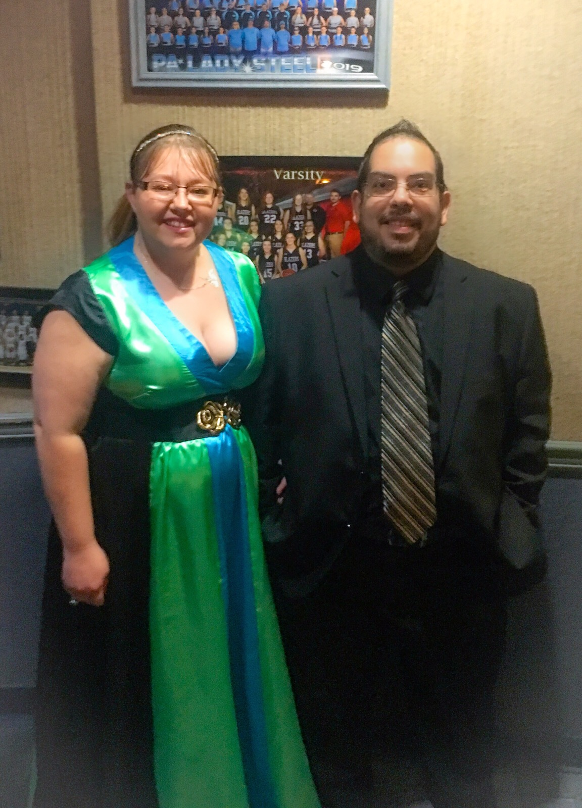

|  |
Joseph Salvador
Aspiring Reality Hacker
Transitioning from retail and restaurant management and seeking a full-time role in the field of Information Technology. 10 years of experience in Management of several small teams and of facilities as a whole to pull off the best consumer experience, complete with add-on’s to enhance guest comfort. Experience in Hiring, Training, P & L, and Operations experience is just some of the things I bring behind the role. Along with Vision, ability to communicate Intent, and build team synergy. Recently completed the Google IT Support Professional Certificate — an eight-month intensive IT support program that covers troubleshooting, customer service, networking, operating systems, system administration, and security, and includes evaluative hands-on assessments.]
|